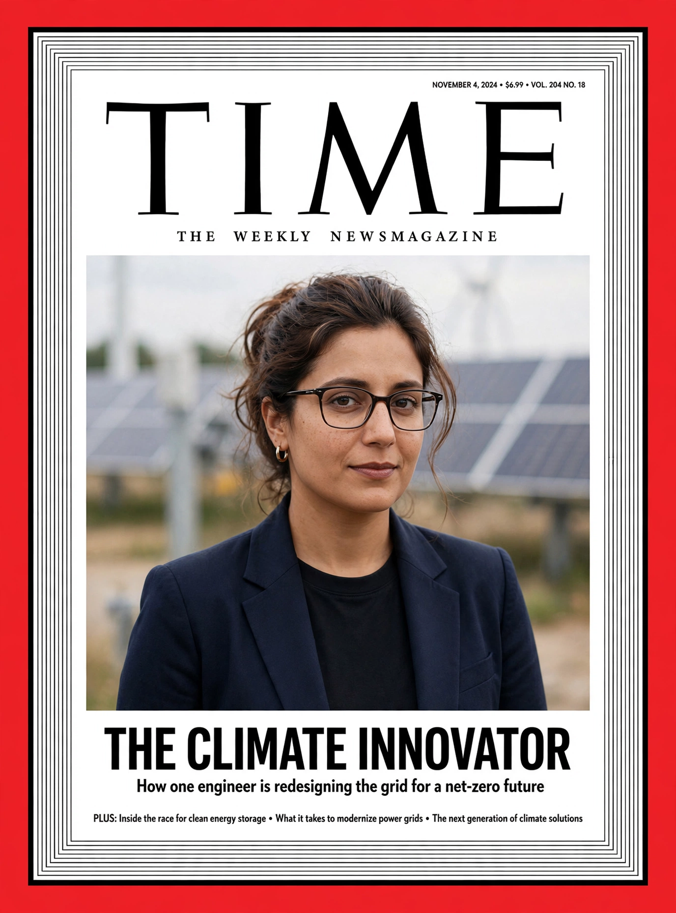

Top stories
Top stories from TIME

TIME's homepage carries the century-old magazine's journalism: news and analysis, health and science, and its franchise lists — Person of the Year, the TIME100 and TIME100 Next — with the famous red border as its brand mark.
Health
Medicine and wellbeing
TIME Health is a major vertical.
Person of the Year
The annual franchise
The year-end selection, running since 1927 (as Man of the Year originally).